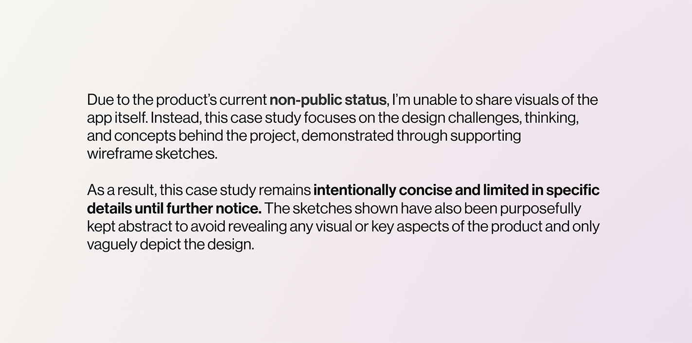

WeWrangle
My Roles
Overview
A UX/UI-focused project centred on an existing product, aimed at significantly improving the user experience, core functionality, and user flows. The work involved evolving the product from an early high-fidelity stage into a more refined and considered experience, introducing new details and enhancements throughout. Drawing on previous experience with AI, alongside research into emerging systems and technologies, I used testing feedback to refine the experience and develop more intuitive interactions and workflows.
February 2026 — March [4 Weeks]

Updating core features
The first phase of this project focused on improving the foundational functionality of the existing system. At the time, the product was capable of generating images through a specific workflow, but lacked a strong usability-driven experience.
To address this, I introduced a range of core features aimed at improving both functionality and usability, including search capabilities, a tagging system, a more cohesive and consistent UI, and reimagined modals to better support the overall experience.
Userflow alteration &
new management screens
Following this, the second key focus of the project was reworking the overall product flow. With the introduction of new features, the way users navigated the platform needed to evolve to feel more intuitive and cohesive.
To support this, I designed new project overview screens and restructured the user flow to create a more natural experience, improving both usability and the management of these files
Core feature flow
A significant portion of the project was then dedicated to rethinking the core AI centred experience and how each stage of the process should flow for both new and existing projects. The goal was to create a system that felt intuitive, logical, and effective for users across different use cases.
The resulting flow became highly tailored to the product itself, intentionally breaking from some conventional patterns. In this case, however, that shift created a more effective and considered experience for the specific needs of the platform.